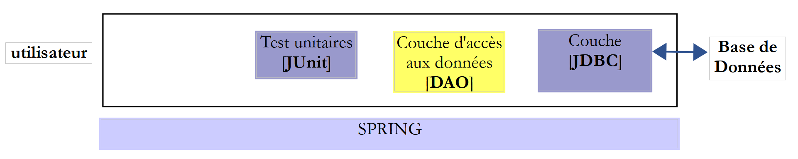
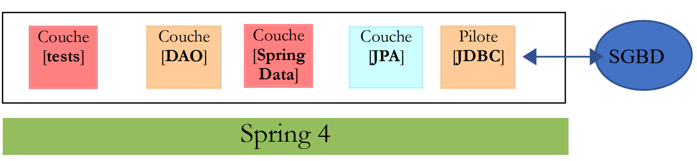

1. Introdução
1.1. Contexte
O PDF do documento pode ser encontrado em |AQUI|.
Os exemplos do documento estão disponíveis |AQUI|.
Este documento é simultaneamente um curso e um TD (Trabalho Dirigido) universitário. Destina-se a principiantes. Utiliza as seguintes fontes:
Referências:
Iremos referir-nos a estas fontes, respetivamente, como [ref1] e [ref2]. A fonte [ref1] é antiga (2002), mas suficiente para este documento, onde é utilizada apenas para a apresentação da sintaxe da linguagem Java e das suas ações elementares. O restante necessário para a elaboração do TD é apresentado neste documento em capítulos intitulados [Cours]. Estes capítulos provêm diretamente do [ref2] (2015) e foram, por vezes, simplificados.
O objetivo do documento é ensinar a linguagem Java numa perspetiva profissional. Por esta razão, baseamo-nos fortemente no framework Spring [http://spring.io/], amplamente utilizado no desenvolvimento JEE (Java Enterprise Edition). Logicamente, este curso deve ser seguido por um curso JEE. É o que acontece na Istia (Universidade de Angers). O JEE é atualmente (novembro de 2015) a principal fonte de emprego para jovens programadores com formação de nível Bac+5. Existem muitas outras tecnologias além do Spring no mundo do JEE. O Spring tem a vantagem de ser compreensível e, sobretudo, de proporcionar boas práticas de codificação reutilizáveis fora do ecossistema do Spring. É isso que explica a sua escolha neste contexto.
Este TD é utilizado há mais de 10 anos e tem evoluído com as tecnologias. É seguido (pelo IstiA) por um TD, JEE e [Introduction à Java EE]. Este último, o TD, data de 2012 (estamos agora em 2015) e mereceria ser atualizado. Apresenta a ortodoxia JEE através do framework web JSF2 (Java Server Faces) e dos EJB3 (Enterprise Java Bean). Juntos, estes dois TD permitiram que muitos estudantes conseguissem estágios JEE em ESN (empresas de serviços digitais) e fossem contratados logo a seguir.
Não se encontrará neste documento uma apresentação formal de todas as facetas do Java. Ao longo dos anos, o comportamento dos programadores juniores perante um problema evoluiu bastante. Atualmente, recorrem quase sistematicamente à Internet para encontrar trechos de código que, quando reunidos, formam um programa. Se lhes for ministrado um curso, utilizam-no muito pouco e preferem, mais uma vez, recorrer à Internet. Inicialmente cético em relação a esta forma de trabalhar, fiquei, no entanto, surpreendido com os resultados obtidos. Assim, alunos com dificuldades conseguiam produzir programas que funcionavam, quando, sem a ajuda da Internet, provavelmente não o teriam conseguido. Atualmente, baseio-me nesta forma de trabalhar.
Fragmentos de código não proporcionam uma visão global da arquitetura de uma solução, e um dos objetivos deste documento é precisamente fornecer essa visão. Os alunos realizam este TD tal como realizam o TP, de forma autónoma. Não há aulas expositivas. Existe um plano de trabalho que lhes indica o estado de avanço esperado ao longo das sessões. Podem estar atrasados ou adiantados em relação a esse plano. O seu avanço é verificado através de um certo número de validações que têm de apresentar ao docente. Este está presente tanto para lhes fornecer explicações quando solicitadas como para validar o seu trabalho. Cada um avança ao seu ritmo. No final das 36 horas atribuídas a este TD, alguns terão feito mais 50% de validações do que outros, mas todos — pelo menos é esse o objetivo — terão compreendido o que fizeram de forma autónoma. Este TD pode ser realizado sem o acompanhamento de um professor. É por isso que está disponível no [https://stahe.github.io].
Este documento não é adequado para quem procura um curso académico sobre Java, algo em que o Java seja explicado de forma progressiva e estruturada e em que cada detalhe da sintaxe seja explicado e justificado. Trata-se, antes, de uma abordagem experimental que aqui se propõe. É provável que o aluno não compreenda tudo o que lhe é apresentado no documento, mas provavelmente saberá reutilizar o seu conteúdo de forma adequada, e a compreensão dos detalhes virá com a experiência.
Este documento também não é um curso de algoritmos. O algoritmo do TD é básico e pode ser resolvido por qualquer principiante que esteja a frequentar as suas primeiras aulas de algoritmos. O documento centra-se no ambiente de desenvolvimento profissional em Java, com as suas numerosas bibliotecas ou frameworks, e na arquitetura do código. A maioria dos estudantes que vejo passar apresenta lacunas em algoritmos, que são posteriormente confirmadas pelos orientadores de estágio. Portanto, sim, o domínio dos algoritmos é importante, mas não é o objetivo deste curso-TD.
Por fim, este documento (dezembro de 2015) não apresenta as últimas novidades do Java, nomeadamente os streams e as funções lambda. No entanto, utilizam-se nele alguns elementos da última versão do JDK, o JDK 1.8, e os códigos que se seguem devem ser compilados por este JDK.
1.2. Contenu
O capítulo 2 apresenta o tema do TD, um cálculo de resultados eleitorais. O problema é básico. O capítulo 2 pede que se implemente a solução em duas linguagens, C# e Java, que são muito semelhantes. A implementação é feita sem classes. O objetivo é apresentar a sintaxe do Java, as suas instruções básicas e o IDE (Ambiente de Desenvolvimento Integrado) Eclipse, que serve para construir projetos em Java.
O capítulo 3 pede que se implemente a solução do TD em Java com classes. O objetivo é apresentar os conceitos de classes, herança, interfaces e classes genéricas. É introduzido o conceito de teste unitário JUnit.
O capítulo 4 apresenta os conceitos subjacentes aos capítulos seguintes:
- arquiteturas em camadas;
- a programação por interfaces;
- a utilização do Spring para implementar os dois conceitos anteriores;

O capítulo 5 apresenta o framework Spring através de quatro projetos.
O capítulo 6 apresenta o API JDBC, que é uma interface de acesso a bases de dados.
O capítulo 7 implementa a camada [DAO] (Data Access Object) do TD com o API JDBC e o Spring.

O capítulo 8 implementa a camada [métier] do TD:

O capítulo 9 implementa a camada [ui] do TD com uma aplicação de consola:

O capítulo 10 implementa a camada [ui] do TD com uma aplicação gráfica que utiliza a biblioteca de componentes Swing:


O capítulo 11 apresenta a gestão de bases de dados com o framework [Spring Data], um ramo do ecossistema Spring. Introduz a especificação JPA (Java Persistence API), que permite à camada [DAO] manipular objetos em vez de manipular SQL (Structured Query Language). A arquitetura em camadas evolui da seguinte forma:

O capítulo 12 aplica o capítulo 11 ao implementar o acesso à base de dados do TD com o [Spring Data].
O capítulo 13 mostra como disponibilizar uma base de dados na Web com o [Spring MVC], que é outro ramo do ecossistema Spring. A arquitetura evolui para uma arquitetura cliente/servidor:

Os capítulos 14 e 15 transformam a aplicação do TD numa aplicação cliente/servidor:

O capítulo 16 mostra como proteger o acesso a uma aplicação web com o [Spring Security], outro ramo do ecossistema Spring.

O capítulo 17 retoma o TD e protege o serviço web das eleições.
O capítulo 18 aborda o problema das solicitações entre domínios:
 |
- em [1], uma aplicação web fornece páginas HTML / JavaScript;
- em [2], o navegador executa o JavaScript incorporado nas páginas HTML para consultar o serviço web seguro [3-4];
Seja D1=http://machine1:port1 o domínio do servidor [1] e D4=http://machine4:port4 o domínio do servidor [4]. Se os servidores [1] e [4] não estiverem no mesmo domínio [D1!=D4], então as solicitações de [3] para [4] são denominadas solicitações entre domínios. Devido às restrições de segurança implementadas pelos navegadores, a sua implementação pode ser problemática. Iremos analisar uma solução.
O capítulo 19 implementa as solicitações entre domínios utilizando a aplicação das eleições como exemplo.
1.3. As ferramentas utilizadas
Os exemplos que se seguem foram testados no seguinte ambiente:
- computador com Windows 10 Pro de 64 bits;
- JDK 1.8 (parágrafo 22.1);
- IDE Spring Tool Suite 3.6.3 (parágrafo 1);
- NetBeans 8.1 (parágrafo 22.4);
- navegador Chrome (os outros navegadores não foram utilizados);
- extensão do Chrome [Advanced Rest Client] (parágrafo 1);
- WampServer, que inclui o SGBD, o MySQL e a ferramenta [PhpMyAdmin] para a sua gestão (parágrafo 22.7);
É importante utilizar o JDK 1.8. Alguns exemplos utilizam elementos deste JDK. A maioria dos exemplos são projetos Maven que podem ser abertos tanto pelo IDE Eclipse como pelo [https://www.eclipse.org/], IntellijIDEA Community Edition, [https://www.jetbrains.com/idea/download/] e NetBeans [https://netbeans.org/]. A seguir, as capturas de ecrã provêm do IDE Spring Tool Suite, uma variante do Eclipse.
1.4. Suporte
Os projetos Eclipse referidos neste documento estão disponíveis no site [https://tahe.developpez.com/tutoriels-cours/intro-java-spring/serge-tahe-introduction-au-langage-java-et-a-l-ecosysteme-spring/].
 |
Para importar os projetos de um capítulo, proceda no Eclipse conforme indicado em [1-8]:
 |
A maioria dos projetos são projetos Maven. Se, após o carregamento, estes apresentarem erros, execute o [Alt-F5] e siga o procedimento descrito no [9-10]. Os projetos Maven selecionados serão recompilados.
 |